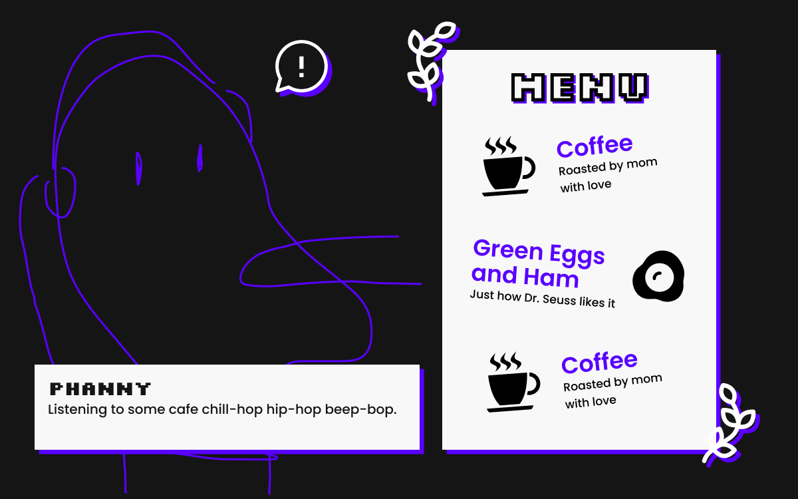
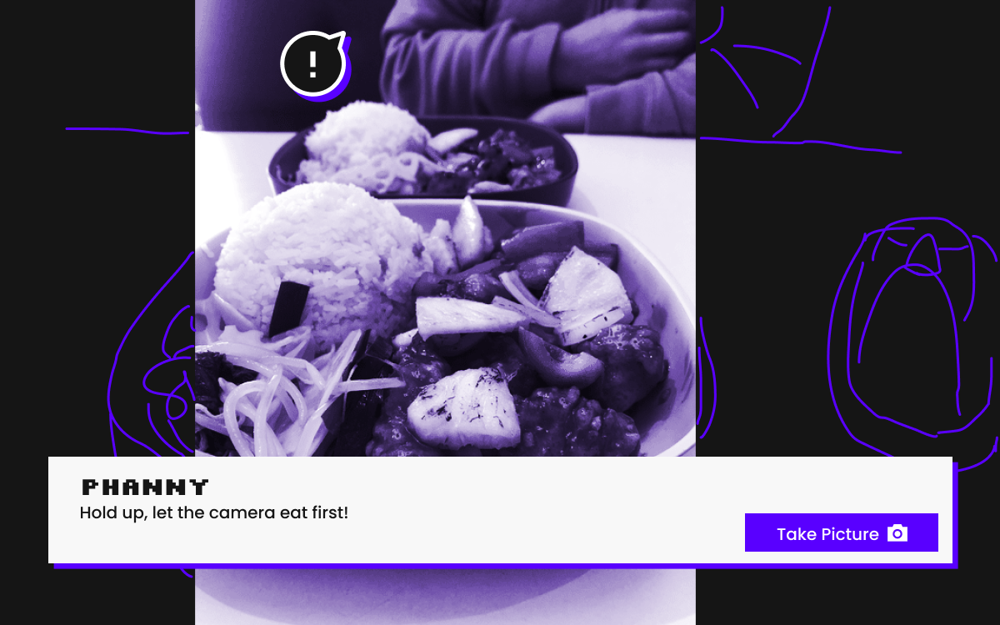
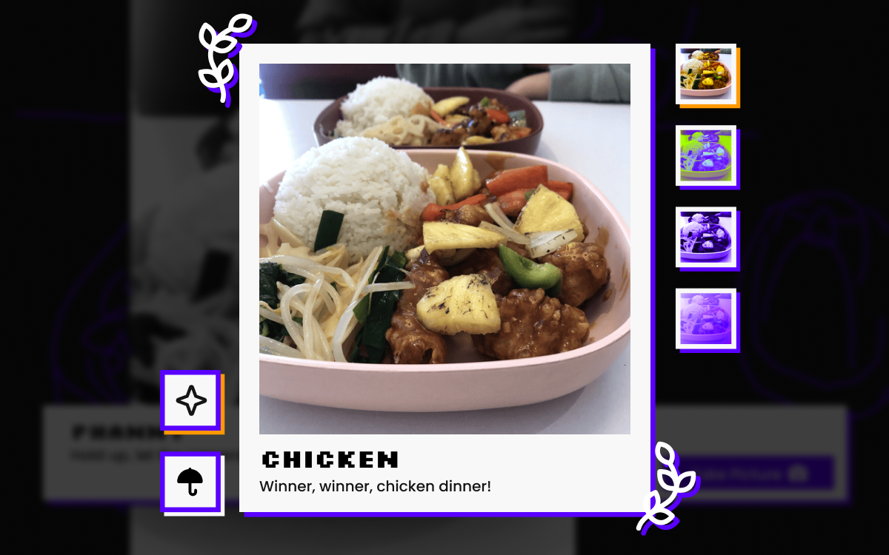

Every Picture Design Comp

- Able to interact with the illustration and get more familiar with the character
- A selection of food to bring up the memory
- Keeping the interface to have the same style as the portal page

- Interacting with parts of the image
- Using the photo to form some of the illustration to save time
- Take a picture to move on to the next page

- Use filters to change the image and add decorations
- Users will go back to the main page and can select another item
- Their polaroid will be saved on the menu (maybe)